Third Month SEO Progress Report
What changed in August, what was completed, what remains underway, and the priorities for September.
Executive Summary
August expanded LifeUSA’s charitable-giving content, brought the Gaza song campaign onto the website, and delivered practical support beyond SEO. Google Search clicks rose 15.7% over the preceding 31 days, although average ranking weakened and the giving hub needs closer attention.
Giving-Cluster Rewrites
4The giving hub, stock guide, tax guide and donation tracker.Campaign Page Published
1The Gaza song page connects the campaign to orphan sponsorship.Google Search Clicks
+15.7%885 clicks, up from 765 in the preceding matched period.Extra: SEO Lessons
16Practical lessons covering Search Console, Ahrefs and Codex.Search Momentum
Google Search Console data for August 5 to September 4, 2026, shows more clicks and impressions than July 5 to August 4, 2026. Both periods contain 31 days.
Clicks
885+15.7%Previous period: 765 clicks.Impressions
145,403+4.0%Previous period: 139,790 impressions.Click Rate
0.61%+0.06 pointsPrevious period: 0.55%. Calculated from clicks and impressions.Avg. Position
11.31.3 positions weakerPrevious period: 10.0. A lower number is better.Evidence of Search Growth
{kind=link}
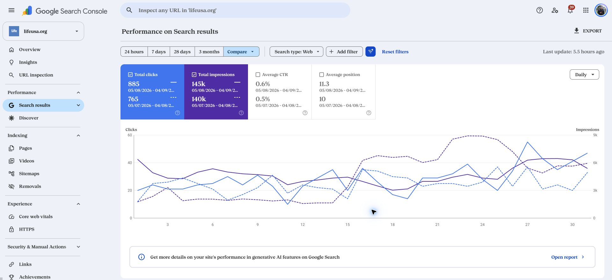
{kind=link}
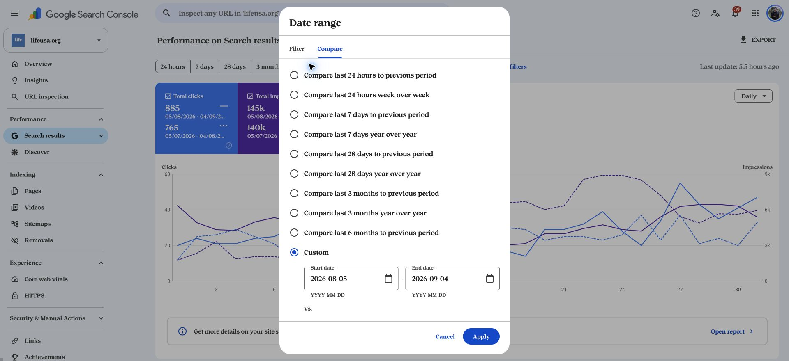
{kind=link}
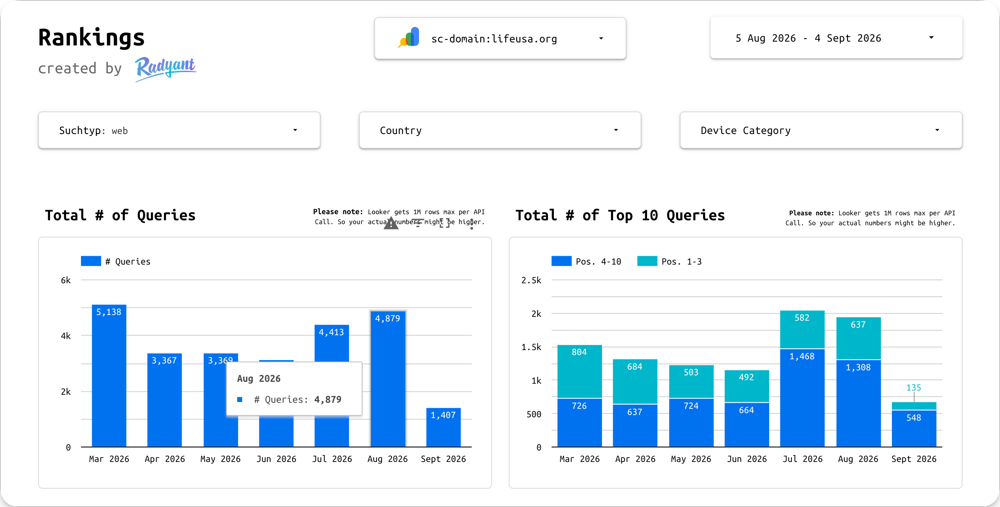
Pages Creating the Most Search Activity
Direct Search Console page results for the same matched periods. Earlier content appears here as performance context, not as a new August deliverable.
| Page | Clicks | Previous | Change | Impressions |
|---|---|---|---|---|
| Homepage, HTTPS | 279 | 265 | +14 | 10,049 |
| Earthquake guide | 147 | 83 | +64 | 11,155 |
| What Is an Orphan? | 60 | 37 | +23 | 68,435 |
| Why Donate to Charity? | 53 | 112 | −59 | 9,306 |
| Nepal flash floods | 44 | 0 | +44 | 3,870 |
| 10 Ways to Help Orphans | 24 | 13 | +11 | 4,889 |
Broader Search Context
The supplied dashboard captures provide additional context. Their processed totals differ from the direct Search Console results above and are not combined with them. Monthly charts use calendar-month buckets; September is partial. Cropped panels do not show a complete date filter.
{kind=link}
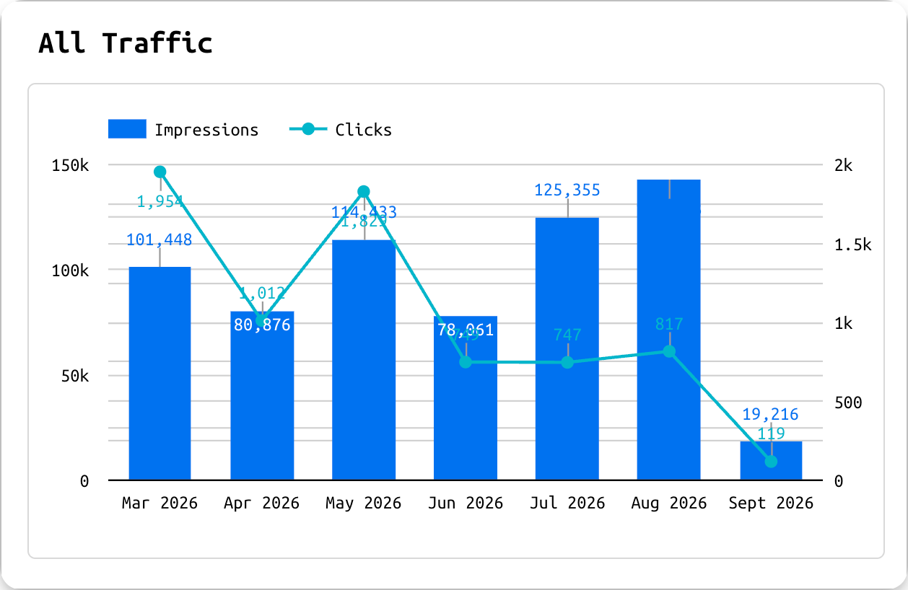
{kind=link}
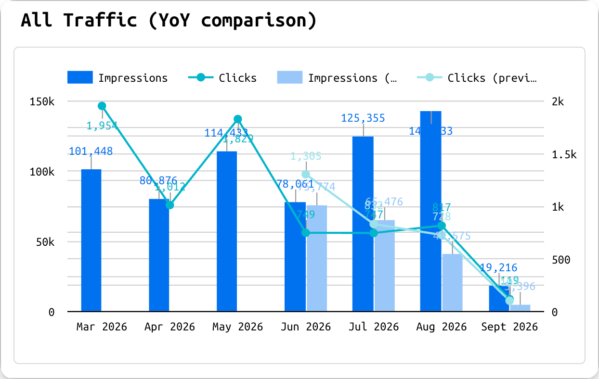
{kind=link}
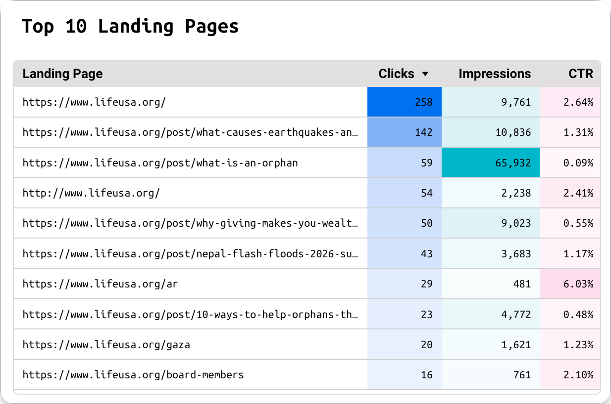
{kind=link}
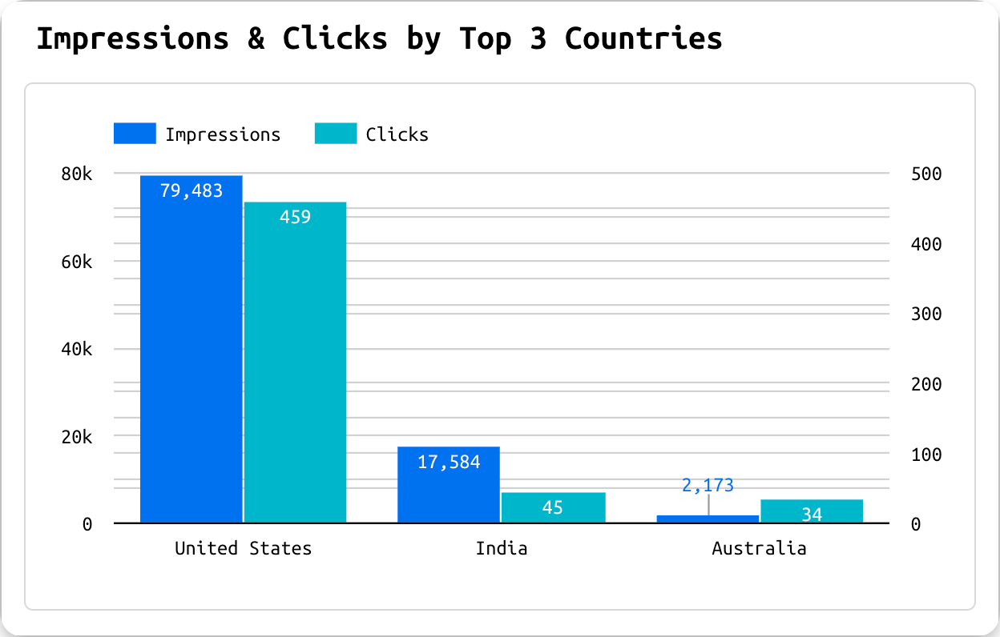
{kind=link}
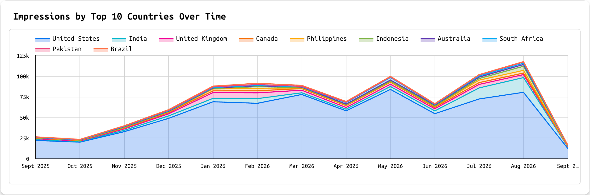
{kind=link}
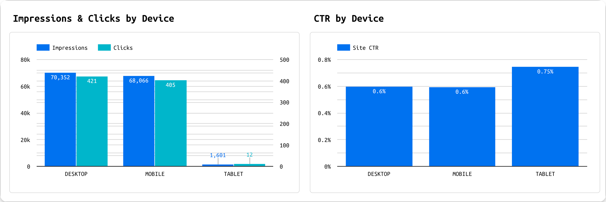
What August Delivered
The month combined a live campaign, stronger charitable-giving articles, practical website corrections and additional support for LifeUSA’s team.
Results at a Glance
Gaza campaign page published
Built and published the 60,000 Orphans in Gaza page, combining the song, lyrics, sponsorship information and direct donation links. Added the team’s sponsorship copy and enabled the page’s mobile view.
4 charitable-giving articles strengthened
Developed the cluster and supported rewrites of the giving hub, stock-donation guide, tax-deduction guide and donation tracker. The pages now cover distinct donor questions instead of repeating the same topic.
Visual explanations and connected reading
Published infographic sets on the giving hub, tax guide, donation tracker and Nepal article. The tracker also received a new featured image, a clearer address, a redirect from its earlier address and contextual links from related guides.
Mobile view restored
Adjusted 15 important pages, including the homepage, for mobile and coordinated restoration of Wix’s mobile-friendly setting with Humza. Saiaf confirmed that the mobile view works correctly on his phone.
Blog and report browsing separated
Corrected the mixed blog-and-report listing reported by Angela and notified her on September 2. The LIFE Blog page gives readers a dedicated route to articles.
One more public profile aligned
Verified the approved logo and website on ProvenExpert, bringing the tracked total to four qualified profiles. This is one new profile beyond the three credited in July.
Proof of Published Content
{kind=link}
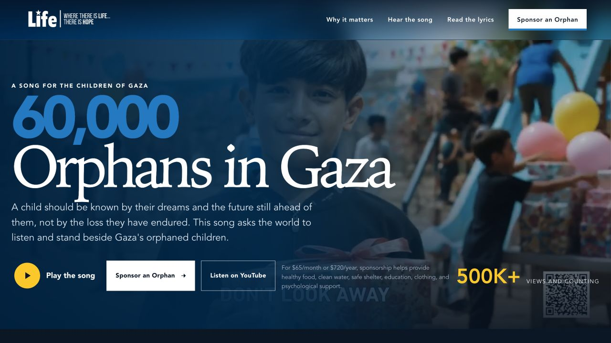
{kind=link}
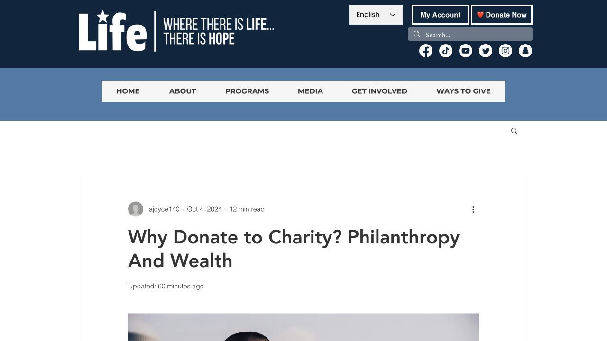
{kind=link}
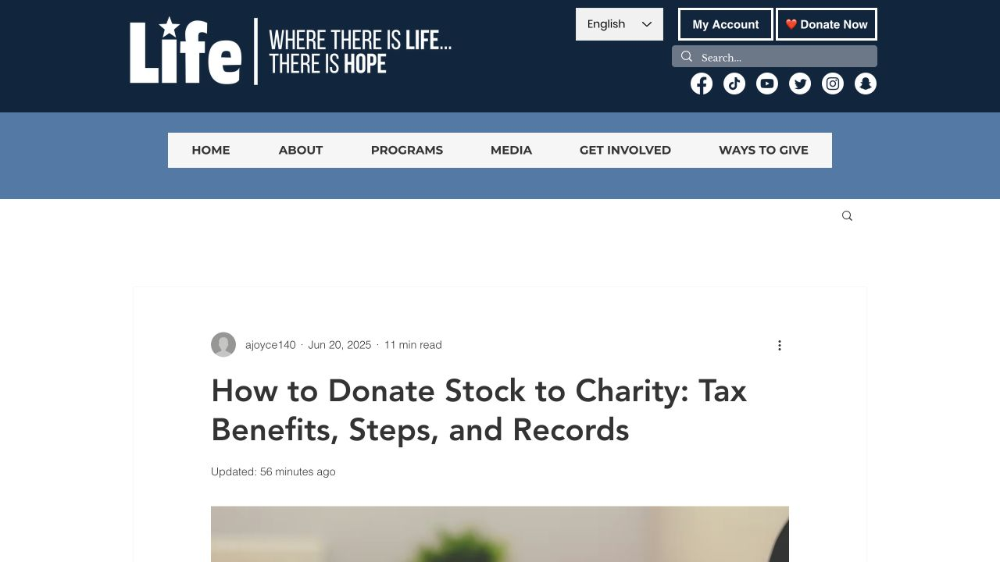
{kind=link}
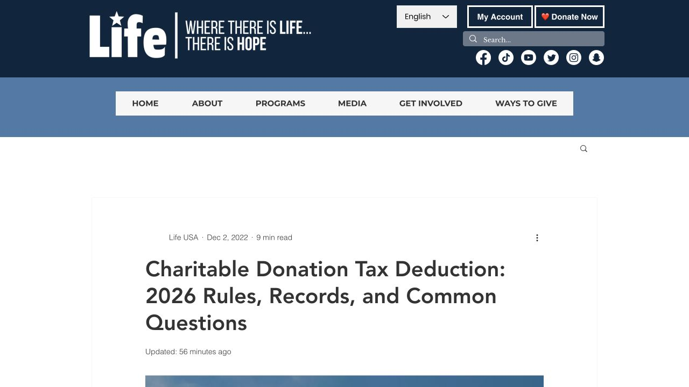
{kind=link}
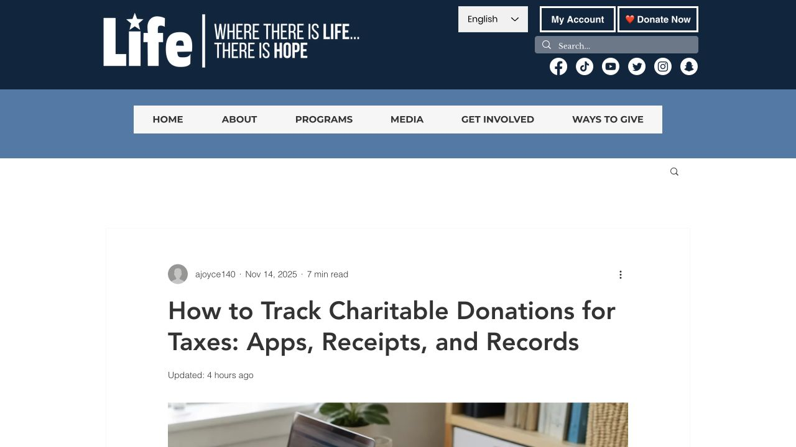
Extra Work
| Additional work | What was delivered | Result |
|---|---|---|
| Hubstaff usage analysis | Reviewed organization-wide usage, recorded and manual time, projects, tasks and application use. Built an executive report with equal-period comparisons and practical management questions; refreshed the analysis through September 4. | Initial report emailed to Dr. Hany on August 22. The updated report is available online. |
| 16-lesson SEO mini-course | Published eight Search Console lessons, four Ahrefs lessons and four Codex lessons, with practical tasks and review outputs. Updated the course design and sent the expanded course to Angela. | Angela reported completing the earlier lessons. The expanded course is available for continued practice. |
| Image-rights response and cleanup | Investigated the flagged-image notice, prepared a replacement sheet with source and license references, and removed flagged uses from the current Wix pages and Media Manager. | Current-site cleanup was reported to the team. Older source files remain a separate owner-dependent matter, listed below. |
| Image-checking guidance | Researched practical tools and advised Angela on using reverse-image search to find likely sources, then checking permission or license evidence. | A repeatable review approach, not a claim that the full website has been legally cleared. |
{kind=link}
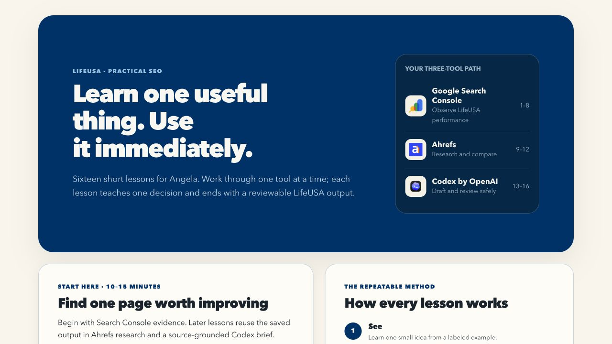
Editorial Support
Prepared and delivered the next tax-deduction and IRA giving outlines. Reviewed Angela’s Nepal article, advised on relevant internal links and clean link addresses, and shared its early Search Console performance.
Work Still Underway
The remaining work needs clear ownership and focused follow-through.
| Workstream | Current position | Next move and owner |
|---|---|---|
| Retired-logo results | Some Google identity surfaces show current branding, but the full-name Images query still displayed retired logos at the August 30 check. Four profiles are verified; Idealist does not yet count. | Leadership: decide the old WordPress archive’s future and approve pending publisher follow-ups. Saiaf: continue exact-query checks and source corrections. |
| Older image files | Three original files were registered under an older or separate Wix site. Removing current page use does not resolve the older hosted files or establish legal closure. | LifeUSA and the original site owner: recover the appropriate account and complete the source-file review. Route legal questions to counsel. |
| Website identity | The August 30 website check still found duplicate website-description data. | Humza and Saiaf: consolidate the duplicate website entry. |
| IRA giving and remaining editorial work | The QCD outline is delivered, but a new published QCD article is not counted. Additional stock and children-in-crisis infographic candidates are prepared rather than credited as published. | Angela and Saiaf: choose the next article and approve visuals. LifeUSA Finance: confirm any organization-specific giving instructions before publication. |
| Donation measurement | This report measures Google Search activity, not completed donations. It does not establish a verified end-to-end donation reporting path. | LifeUSA’s website and analytics owners: confirm the active Analytics property, Tag Manager ownership and donation-completion measurement. |
Evidence of Work in Progress
{kind=link}
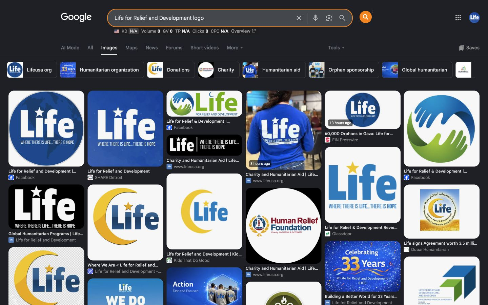
September Priorities
September should build on the new content while closing the issues that limit its value.
Recover clicks on the giving hub
Compare the giving hub’s winning and losing queries, positions and click rates. Use that evidence to refine its search-result wording and content focus.
Advance the charitable-giving cluster
Move the IRA giving outline into the agreed editorial sequence, preserve clear boundaries between guides, and review the donation tracker’s new links and early search signals.
Finish the website identity correction
Consolidate the duplicate website entry so search engines receive one consistent description of the site.
Resolve the remaining image and logo dependencies
Secure the original Wix owner’s help with older files, decide the WordPress archive’s future, and act on the approved publisher-correction queue.
Turn SEO lessons into reviewed work
Review Angela’s lesson outputs and questions in the next session. Add practical exercises gradually instead of moving through all tools at once.
Confirm donation measurement
Agree on the active analytics property and accountable owner, then verify a complete donation measurement path before reporting donation outcomes.
Source Notes
Sources and reporting boundaries for this cycle.
- Google Search Console: LifeUSA’s domain property, Web search, August 5 to September 4, 2026, compared with July 5 to August 4. Retrieved in Chrome on September 5. Recent data can be revised by Google. Click rate is calculated from the exact click and impression totals; the interface rounds it to one decimal place.
- Supplied dashboard screenshots: Captured September 5. Calendar-month and longer-term charts provide context; the cropped country, landing-page and device panels do not show their full date controls. Their totals are not substituted for direct Search Console data.
- Published work: Public LifeUSA pages, campaign content, article visuals and the SEO course, checked September 5.
- Delivery records: August and early-September client correspondence, writer handoffs and publication records. The team’s correspondence records the mobile adjustments and blog-archive correction. Saiaf subsequently confirmed mobile view on his phone.
- Brand progress: Google Logo Replacement Status, August 12 comparisons and the August 30 monitoring record.
- Extra work: Hubstaff analysis covering August 4 to September 4, course publication and delivery, and the image-cleanup correspondence. Staff data and legal correspondence are not reproduced in this monthly report.
- Prior report: July SEO Progress Report, used to preserve the presentation and prevent repeated credit. No new Ahrefs authority-growth or donation-conversion figures are claimed without a current verified comparison.